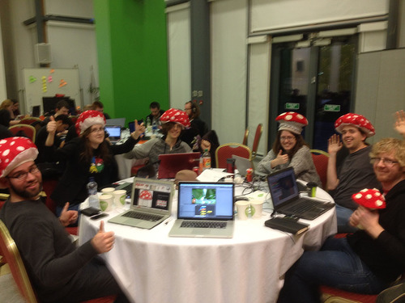
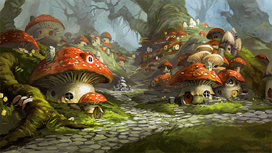

What is Fungus?

Who's it for?
Fungus is popular with writers, illustrators, animators and game designers, especially visual novel & interactive fiction authors. Many people using Fungus are creating games in Unity for the very first time. It is a popular choice for game jams and game design courses.
Free & Open Source
We believe that interactive storytelling should be accessible to everyone, so Fungus is 100% free & open source. It works great with both the free and pro versions of Unity 3D. Fungus is inspired by other great open source storytelling tools like Twine, Ren'Py and Scratch.

Community
The Fungus community is very welcoming and helpful to newcomers. Many people using Fungus have never used Unity or even made a game before, so feel free to ask questions on our community forum. Helping other people with their questions is a fantastic and very welcome way to contribute back to the community.
Features
Fungus allows you to easily add storytelling features to your Unity games with no coding, via an intuitive visual scripting system.
- Suitable for making visual novels, RPGs, hidden object, puzzle and interactive fiction games.
- Flowchart-based character dialogue
- Internationalization of your character dialogue.
- Easy control of sprites, camera and audio to help tell your story
- Works for both 2D and 3D Unity games
- Integrates easily with other Unity code and simple to extend.
- Powerful Lua scripting support for more experienced users
- 100% free and open source
Contribute
We welcome all sorts of contributions to Fungus. You can report bugs, suggest new features, contribute source code, write an article, help answer questions on the forums or even just tell your friends about the project!
- Issue Tracker: GitHub issue tracker
- Source Code: GitHub code repository
Credits
Chris Gregan is the main author and maintainer of Fungus. He's co-founder of Snozbot, along with John O' Kane and Ronan Pearce.
Dr. Matt Smith has kindly contributed the written documentation for the Fungus project. If you're new to Unity development then a great source of information, ideas and sample projects is his Unity 5.x Cookbook, by Matt and Chico Queiroz.
Paul Mc Grath is Animator / Designer / Film-maker at Whackala. He contributed the tutorial videos for this site as well as creating the Fungus Training Course.
Special thanks also to Vicky Lee and Coding Grace who have helped us to organise loads of Fungus workshops,
Fungus wouldn't be possible without all the awesome people in our community who have contributed to the project and supported us in myriad ways. Thank you all!
License
The Fungus software is licensed under the Open Source MIT License.
The Fungus documentation is licensed under the Creative Commons Attribution-NonCommercial License.